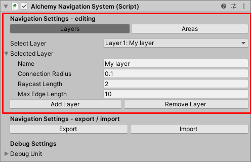
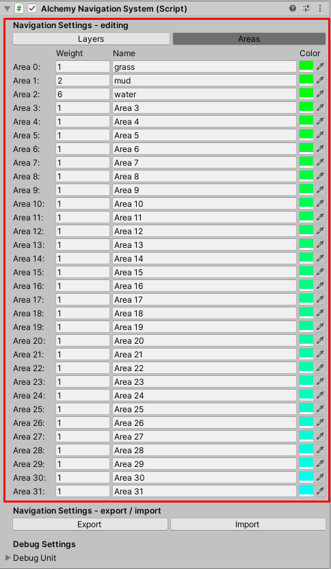
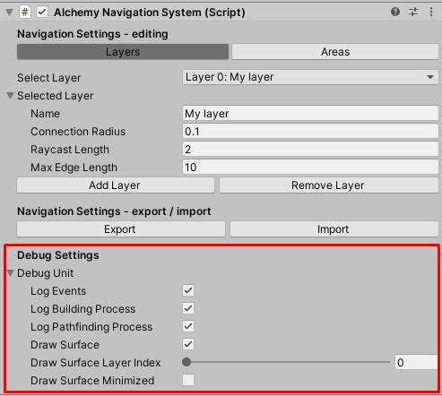

Alchemy Navigation System
The AlchemyNavigationSystem is a component that provides key features for the entire system to work.
To start using AlchemyNavigation:
- Create a new game object and name it appropriately.
- Attach the AlchemyNavigationSystem component to the game object.
Navigation Settings - editing
In the Navigation Settings - editing section of the inspector you can modify layers and areas defined in the instance of the system.
Layers
You can create up to 32 layers. Each layer represents an independent part of the navigation surface. They can be used to create optimal alternative environments for different agents. For example, one layer for people and the other for cars.

| Inspector Property | Description |
|---|---|
| Name | A user-friendly name to appear in the Unity Editor |
| Connection Radius | The maximum distance between vertices to be counted as one vertex. |
| Raycast Length | The length of rays that are used to find faces of the navigation mesh. (optimization) |
| Max Edge Length | The maximum length of edges declared by the user to be used. (optimization) |
Areas
You can use 32 areas to diversify the pathfinding process so that routes through certain areas are taken more often than others. For example, some characters prefer to walk on the pavement rather than on the mud.

| Inspector Property | Description |
|---|---|
| Weight | The greater the weight, the less frequently paths through the certain area are chosen. (1 is a standard value.) |
| Name | A user-friendly name to appear in the Unity Editor |
| Color | The preview color. |
Navigation Settings - import / export
You can import and export navigation settings to ".asset" to change between multiple configurations and migrate them.
Debug Settings
In the Debug Settings section of the inspector you can enable logs and gizmos.

| Inspector Property | Description |
|---|---|
| Log Events | If true, logs general events to the console. |
| Log Building Process | If true, logs in-depth information about the building process to the console. |
| logPathfindingProcess | If true, logs in-depth information about the pathfinding process to the console. |
| drawSurface | If true, the surface is drawn by gizmos. |
| drawSurfaceLayerIndex | The index of the layer to be drawn by gizmos. |
| drawSurfaceMinimized | If true, the surface is drawn in a minimized form. (optimalization) |
Note
If you change the drawing settings, the changes will not appear until the next building process. You can force them using ContextMenu -> ForceGizmosDrawerUpdate.
Scripting
You can use AlchemyNavigationSystem to add or remove parts of the navigation mesh (triangles) at runtime. Consider this simple code as an example:
using AlchemyBow.Navigation;
using AlchemyBow.Navigation.PropertyAttributes;
using UnityEngine;
public class DoorsExample : MonoBehaviour
{
[SerializeField]
private Vector3[] mesh = null;
[SerializeField, LayerIndex]
private int layer = 0;
[SerializeField, AreaIndex]
private int area = 0;
private NavigationFaceWrapper[] wrappers;
public void OpenDoors()
{
var system = AlchemyNavigationSystem.Current;
wrappers = new NavigationFaceWrapper[2];
wrappers[0] = system.RegisterFace(mesh[0], mesh[1], mesh[2], area, layer);
wrappers[1] = system.RegisterFace(mesh[2], mesh[3], mesh[0], area, layer);
}
public void CloseDoors()
{
if(wrappers != null)
{
var system = AlchemyNavigationSystem.Current;
foreach (var wrapper in wrappers)
{
system.UnregisterFace(wrapper);
}
}
}
}